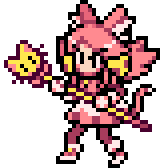

* São 50 perguntas sobre o Murilo, sorteadas e embaralhadas a cada partida. Enquanto a Mad Mew Mew fala, mova o coração com as setas ou WASD (ou arrastando o dedo) e fique em cima da resposta que você acha certa.
* Você tem 5 segundos depois da pergunta. Quando o tempo acabar, vale a resposta em que o coração estiver.
MURILO
ROUND
5
ACERTOS 0